Cold, refrigerated dough is the secret to making delicious focaccia! Allowing the dough to rest 18 to 48 hours in the fridge will yield extra-pillowy and airy focaccia, though if you are pressed for time, you can make this start-to-finish in 3 hours. This 4-ingredient recipe requires only 5 minutes of hands-on time. Video guidance below!
This post may contain affiliate links. Please read my disclosure policy.
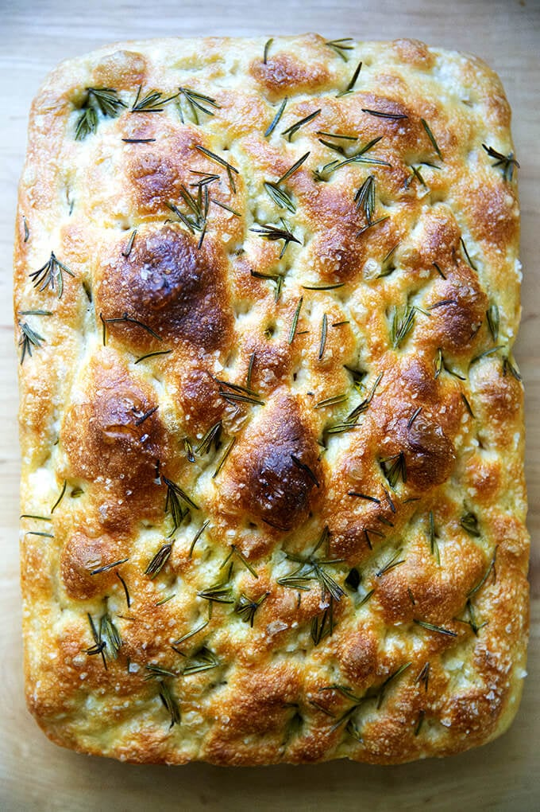I've said it before and I'll say it again: focaccia is the bread recipe for beginners. Why? Because: The no-knead, 4-ingredient dough takes 5 minutes to mix together. It requires no special equipment, no tricky shaping technique, and no scoring. If you have a 9x13-inch baking pan and your fingertips (for dimpling), you're good to go. It emerges soft and pillowy, olive oil-crusted, golden all around, and it's completely irresistible.
In sum, it's hard to beat focaccia in the effort-to-reward category. If you are intimidated by bread baking, this is the recipe I suggest making first, both for its simplicity and flavor. After all, this focaccia bread recipe is adapted from my mother's simple bread recipe, a recipe that has removed the fear of the bread baking process for many.
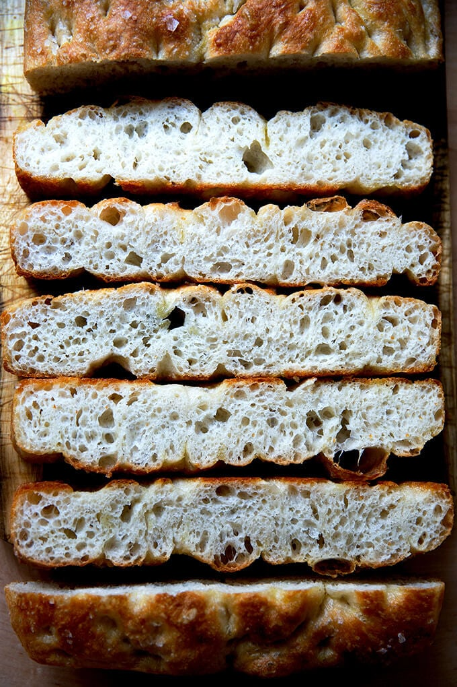This focaccia emerges from the oven golden all around and pillowy inside, its surface dimpled with deep crevices, namely for two reasons: High hydration dough. This focaccia is 88% hydration. Long cold slow fermentation. This dough ferments in the fridge for at least 12 hours or for as long as three days.
Let's explore each reason: A high-hydration dough is a dough with a high proportion of water relative to the flour. A high proportion of water will create a light and air dough and ultimately a focaccia with beautiful air pockets throughout. (Incidentally, this is the secret to making excellent pizza dough, too.) A cold fermentation is beneficial to dough because it slows the fermentation process down and during this long, cold fermentation, enzymes in both the flour and the yeast break down the starches in the flour into simple sugars. These sugars contribute both to flavor and to browning. Cool, right? Furthermore, a long slow fermentation strengthens gluten, which will further promote a crumb structure with lots of air pockets throughout.
There are lots of focaccia bread recipes out there, so why make this one? This one differs from many of the recipes out there in two ways: The long, cold, refrigerator rise. The absence of sugar or honey or any sort of sweetener. Why isn't there any sweetener in this recipe? Simply stated, a sweetener is just not needed — the yeast, contrary to popular belief, does not need sugar to activate or thrive. Sugar will speed things up, but when you're employing a long, slow rise, speed is not the name of the game. As noted above, during the long, cold fermentation, enzymes in both the flour and the yeast will break down the starches in the flour into simple sugars, which will contribute both to flavor and to browning, rendering sugar unnecessary.
Gather your ingredients: 4 cups (512 g) flour, 2 teaspoons (10 g) salt, 2 teaspoons (8 g) instant yeast (SAF is my preference), 2 cups (455 g) water:
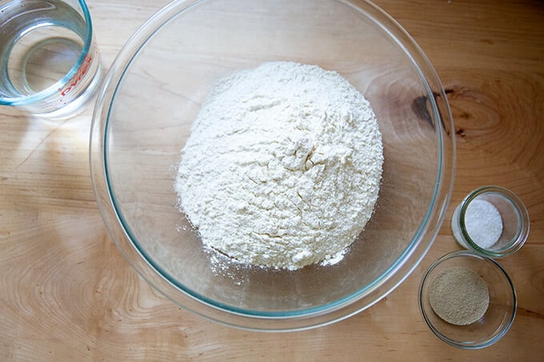Whisk together the flour, salt, and yeast first:
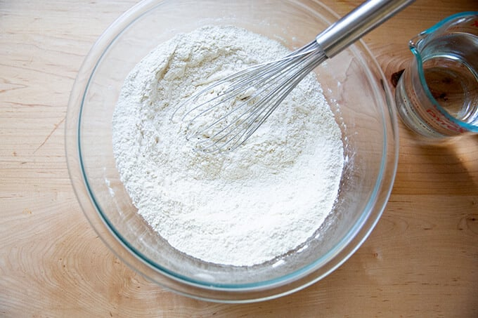Add the water:
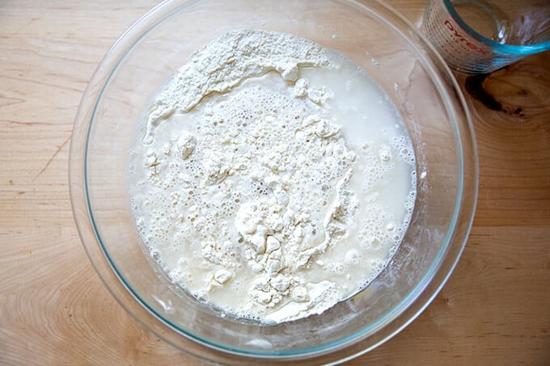Use a spatula to stir the two together.
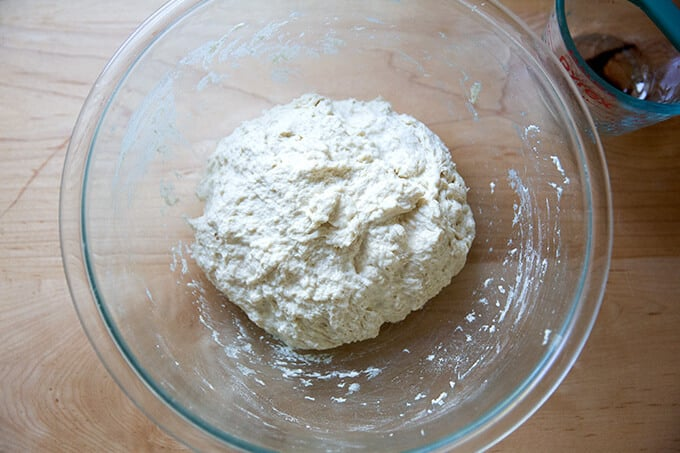Slick the dough with olive oil…
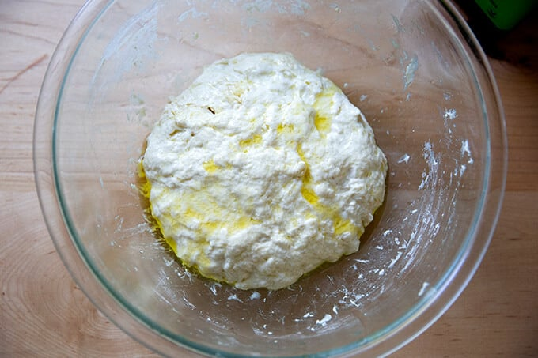… then cover the bowl preferably with a lid or a cloth bowl cover. Stick the bowl in the fridge immediately; leave it there to rise for 12 to 18 hours (or for as long as three days).
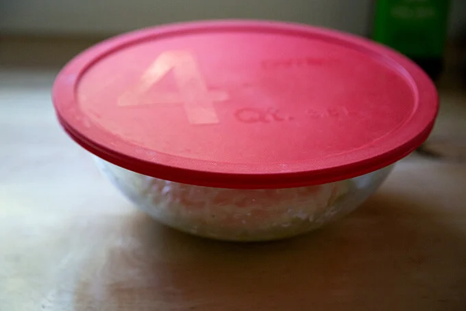NOTE: It is important the dough really be slicked with olive oil especially if you are using a cloth bowl cover or tea towel as opposed to plastic wrap or a lid. If you are using a tea towel, consider securing it with a rubber band to make a more airtight cover. If you do not slick the dough with enough oil, you risk the dough drying out and forming a crust over the top layer.
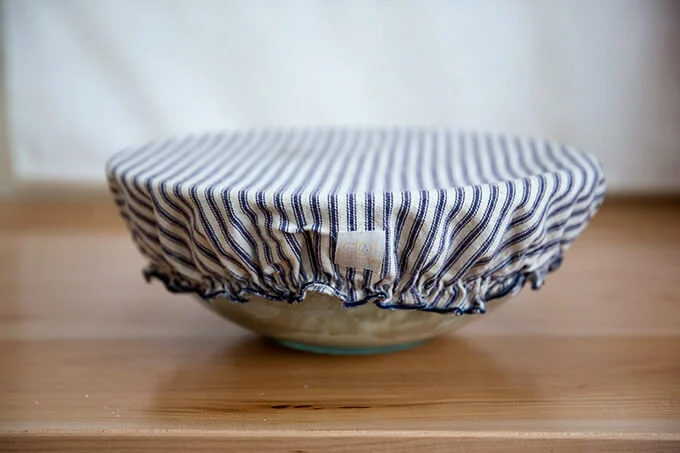Remove from fridge, and remove the cover:
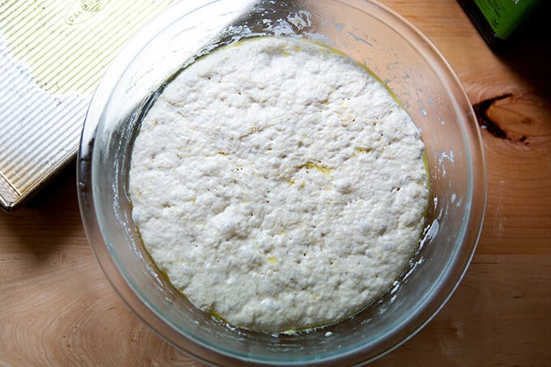Deflate the dough and transfer to a prepared pan. I love this 9x13-inch USA pan. If you don’t have one you can use two 8- or 9-inch pie plates or something similar. If you are using glass baking dishes be sure to grease the dishes with butter before pouring a tablespoon of olive oil into each. (The butter will ensure the bread doesn’t stick.) Don’t touch the dough again for 2 to 4 hours depending on your environment.
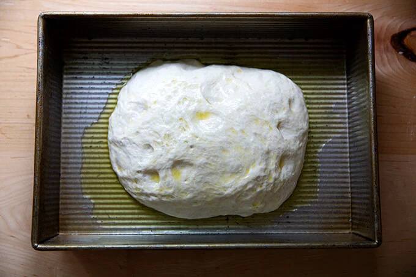After two to four hours, or when the dough looks like this…:
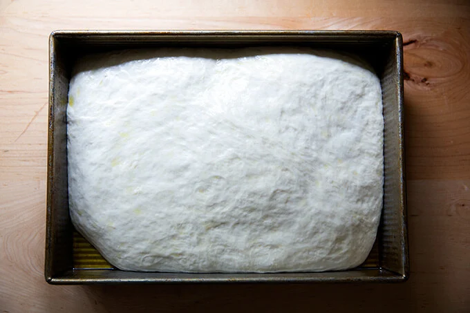… it’s time to dimple it! You can simply use olive oil and salt — I recommend good, flaky sea salt for this. Note, the dough in the photo below spent three days in the fridge, and the dough was super bubbly!
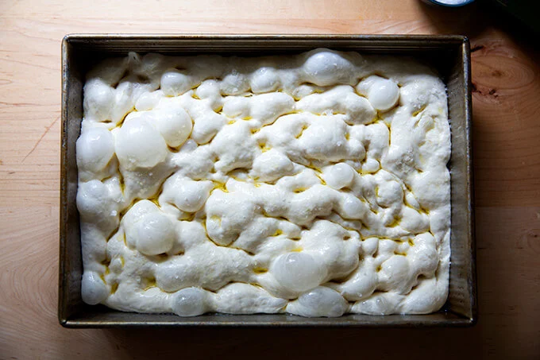if you are using rosemary, sprinkle it over the dough. Then pour two tablespoons of olive oil over the dough, and using your fingers, press straight down to create deep dimples. Sprinkle with flaky sea salt — again, something like Maldon is great here.
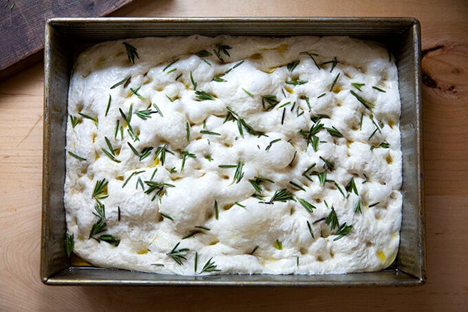Transfer to oven immediately and bake at 425ºF for 25 minutes or until golden all around. Remove focaccia from pans and place on cooling racks.
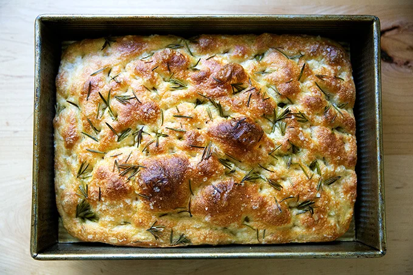One of the most frequently asked questions I get is: How can I add other toppings or ingredients to my focaccia bread? You can do this in two ways:
1. Add them on top as you would rosemary or other herbs. The key is to make sure the ingredients are slicked lightly with olive oil to ensure they do not burn in the oven. I like to sprinkle the rosemary over top of the dough, then drizzle it with olive oil, then dimple the dough.
2. You can add them directly to the dough. In step one, when you whisk together the flour, salt, and instant yeast, add your ingredients — chopped olives, sun-dried tomatoes, roasted garlic — to the flour and toss to coat; then add the water.
Pictured above is my “Ode to Spring” (🤣) Focaccia Bread Art (or Garden Scape). As noted above, the key with adding toppings is to slick them lightly with olive oil to ensure they don't completely char. Keep in mind that some items will char, and a little charring is not a bad thing.
Yes, you can. In fact, in my cookbook, Bread Toast Crumbs, I do not employ an overnight rise. Start-to-finish it can be made in about three hours. The finished bread will not be as pillowy, but it will still be light, airy, and delicious. To skip the overnight rise, simply let the mixed dough rise at room temperature until doubled, about 1.5 to 2 hours. Then proceed with the recipe, knowing the second rise will only take about 30 minutes.
Cold, refrigerated dough is the secret to making delicious focaccia! Allowing the dough to rest 18 to 24 hours (or for as long as 3 days) in the fridge will yield extra-pillowy and airy focaccia, though if you are pressed for time, you can make this start-to-finish in 3 hours. This 4-ingredient recipe requires only 5 minutes of hands-on time. Video guidance below!
Adapted from the focaccia recipe in Bread Toast Crumbs.
A few notes:
PUTTING A VIDEO IN HERE LATER?